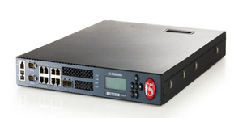
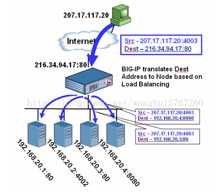

F5负载均衡器是硬件的负载均衡设备

F5配置最简单负载均衡，需要配置的参数有Node（节点）、Pool（资源池）、和Virtual Server（虚拟服务器），它们的关系是，先配置Node，然后配置VS。Node是最基本的定义，如每个服务器就是一个Node，负载均衡Pool是一组Node接收和处理流量的一组设备，如web服务器集群。BIGIP系统将客户机流量请求发送到Pool成员中的任一服务器上（Node），然后将Pool与BIGIP系统中的Virtual server相关联，最后，BIGIP系统将进入Virtual Server中流量传输到Pool成员，Pool再传达给Node。

负载均衡算法:
负载均衡设备本身都是以负载均衡算法为基础的,负载均衡算法分为两种:静态负载均衡算法和动态负载均衡算法.
轮询（RoundRobin）：顺序循环将请求一次顺序循环地连接每个服务器。 当其中某个服务器发生第二到第7层的故障，BIGIP就把其从顺序循环队列中拿出，不参加下一次的轮询，直到其恢复正常。 ·比率（Ratio）：给每个服务器分配一个加权值为比例，根椐这个比例，把用户的请求分配到每个服务器。当其中某个服务器发生第二到第7层的故障，BIGIP就把其从服务器队列中拿出，不参加下一次的用户请求的分配，直到其恢复正常。
优先权（Priority）：给所有服务器分组，给每个组定义优先权，BIGIP用户的请求，分配给优先级最高的服务器组（在同一组内，采用轮询或比率算法，分配用户的请求）；当最高优先级中所有服务器出现故障，BIGIP才将请求送给次优先级的服务器组。这种方式，实际为用户提供一种热备份的方式。
最少的连接方式（Least Connection）：传递新的连接给那些进行最少连接处理的服务器。当其中某个服务器发生第二到第7层的故障，BIGIP就把其从服务器队列中拿出，不参加下一次的用户请求的分配，直到其恢复正常。
最快模式（Fastest）：传递连接给那些响应最快的服务器。当其中某个服务器发生第二到第7层的故障，BIGIP就把其从服务器队列中拿出，不参加下一次的用户请求的分配，直到其恢复正常。
观察模式（Observed）：连接数目和响应时间以这两项的最佳平衡为依据为新的请求选择服务器。当其中某个服务器发生第二到第7层的故障，BIGIP就把其从服务器队列中拿出，不参加下一次的用户请求的分配，直到其恢复正常。
预测模式（Predictive）：BIGIP利用收集到的服务器当前的性能指标，进行预测分析，选择一台服务器在下一个时间片内，其性能将达到最佳的服务器相应用户的请求。(被BIGIP进行检测)
动态性能分配（DynamicRatio-APM):BIGIP收集到的应用程序和应用服务器的各项性能参数，动态调整流量分配。
动态服务器补充（DynamicServer Act.):当主服务器群中因故障导致数量减少时，动态地将备份服务器补充至主服务器群。
服务质量(QoS)：按不同的优先级对数据流进行分配。
服务类型(ToS)：按不同的服务类型（在Type of Field中标识）对数据流进行分配。
规则模式：针对不同的数据流设置导向规则，用户可自行编辑流量分配规则，BIGIP利用这些规则对通过的数据流实施导向控制